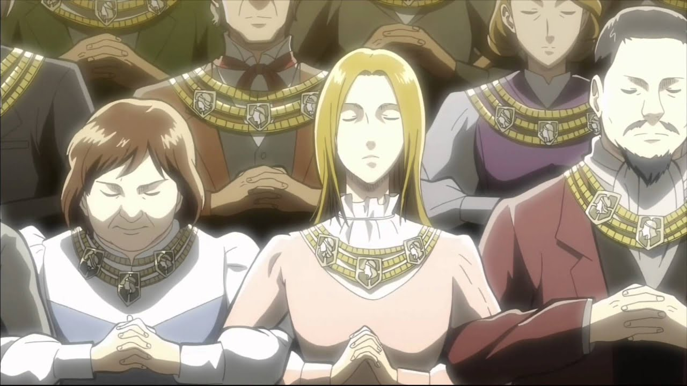

Church of the Walls

About the Church of the Walls
The Church of the Walls is a religious organization located within the Walls of Paradis. Its members believe that the Walls are sacred and must be worshipped and protected, as they consider them a divine gift that keeps humanity safe from the Titans. The Church strongly opposes any attempt to alter or damage the Walls, and its members keep important information about their true nature secret from the general population. For this reason, they play a significant role in maintaining the mystery surrounding the Walls and their origins. One of the most important members of the organization is Pastor Nick, who initially refuses to reveal the secrets he knows about the Walls. Another notable member is Historia Reiss, whose connection to the royal family becomes relevant to the Church's beliefs and secrets. The Church of the Walls represents the influence of religion within Paradis and demonstrates how much of humanity's history has been hidden from its people.